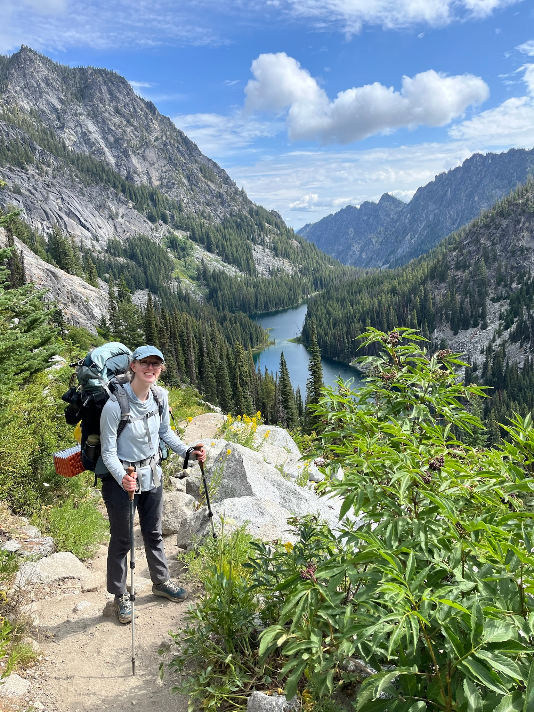

Thoughts on Love Island
This season is messy. The only decent person in the villa is Carl.


My name is Emily. I'm a computational linguist, climber, and baker! This website is a work in progress. Eventually it will contain information about my academic work and trip reports from my jaunts around the PNW. For now, you can find some of the things I've been baking recently. Enjoy!
Check out my bakesThis season is messy. The only decent person in the villa is Carl.
My favorite thing to bake is any kind of yeasted pastry. Kanelbullar is probably top of the list, but I like to do cinnamon and other rolls as well. I also really like working with sourdough to make loafs and bales. Cakes are fun to decorate when there is an occasion. Everything I bake is vegan!
Pretty much every dry (and even sometimes wet) weekend,
you can find me outside climbing in the PNW. I tend to
venture a little further from the exits, and prefer
multipitch and alpine climbing. This spring, I started learning
how to trad climb, and this has opened up so many posibilities!
So far, my favorite climbs around here have been:
- Absolute Serentity Now (5.7, 14 pitches)
- Liberty Bell (Beckey Route) (5.6, 4 pitches)
- Prusik Peak (West Ridge) (5.7, 4 pitches) (did I actually enjoy this one?)
- The Edge of Time Arete (5.9, 7 pitches)
- Spirit of Squamish (5.8, 8 pitches)
Some things I desperately want to climb in the future:
- Ragged Edge (5.7, 9 pitches)
- Mile High Club (5.10a, 7 pitches)
I recently graduated with my master's in computational linguistics from the
University of Washington. For my Master's thesis, I contributed a library
to the LinGO Grammar Matrix customization system for modeling noun incorporation (NI)
cross-linguistically. I surveyed the literature on NI and developed an analysis
couched in the syntactic framework of Head-Driven Phrase Structure Grammar (HPSG)
and the semantic framework of Minimal Recursion Semantics (MRS). I then designed
a web-facing, interactive questionarie to ellicit informaiton from a user about a
given langauge. Their responses are fed into the backend Python code I wrote to
output an implemented grammar fragment with NI rules customized to the facts of
the language.
Before attending grad school, I taught 6th and 7th grade linguistics and 8th Spanish
at BASIS Pflugerville for one school year. I loved teaching, and would like to return
to it again in the future.
Prior to teaching, I attended the University of Texas where I studied linguistics,
Arabic, and Spanish. For three years, I worked as a research assistant on an
endangered language documentation project for Nadëb (Brazil). I examined the distribution
and function of various morphemes, and investigated the morpho-syntactic alignment
system of the language.